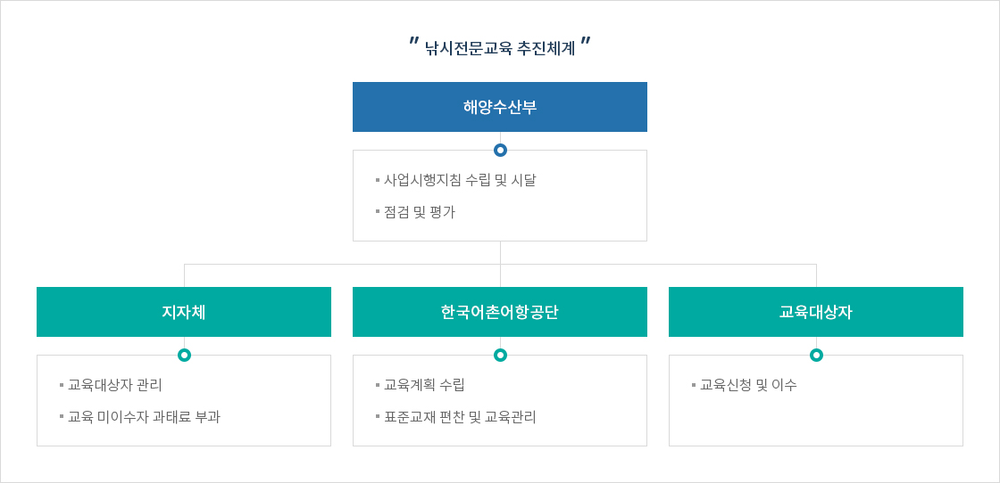
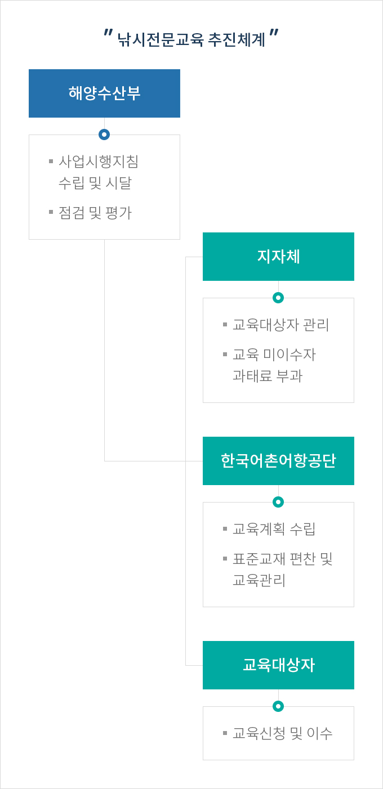
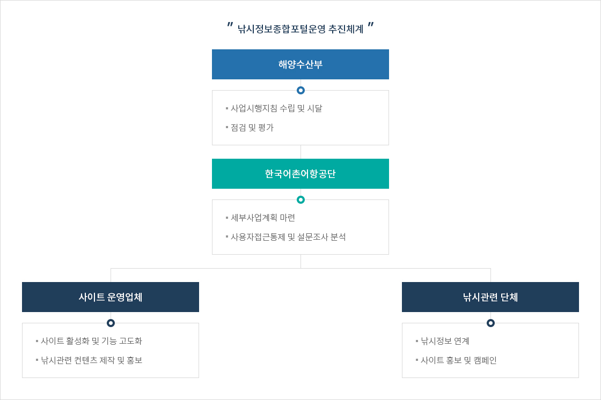
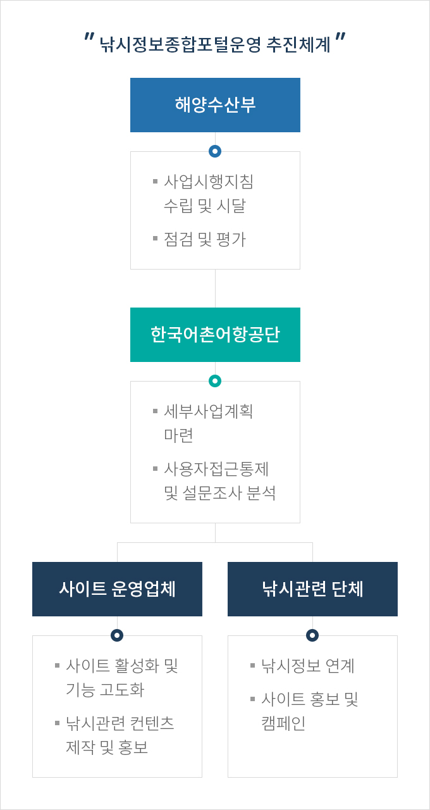

낚시산업 선진화
- 홈
- 사업소개
- 활력있는 어촌
- 낚시산업 선진화
추진계획
낚시전문교육
- 교육대상 : 약 9천여 명(낚시어선업자 및 선원, 낚시터업자)
- 낚시어선 전문교육 약 7.3천여 명
- 낚시터 전문교육 약 0.8천여 명
- 낚시어선 신규·재개자 전문교육 약 0.4천여 명
- 교육방법
- 현장 및 온라인교육
- 교육일정
- 낚시전문교육: 연중 / 1회 4시간 이상
- 낚시어선 신규·재개자 전문교육: 연중(월 1~2회) / 1회 21시간 이상
- 교육과정
교육과정 표로 교육과정명, 교육과목 정보 제공 교육과정명 교육과목 낚시어선 전문교육 (4시간) - 낚시어선 관련 법규 및 수산자원 보호
- 해상교통 관련 법규
- 선박 안전 및 운항
- 사고유형별 안전 및 비상조치
낚시터 전문교육 (4시간) - 낚시 관련 정책 및 법규
- 어류생태 및 수질관리
- 낚시인 안전사고 인명구조 및 응급처치
- 낚시터 시설관리 및 운영
낚시어선 신규·재개자 전문교육 (21시간) 1일차 - 낚시어선 현황
- 낚시어선 관련 주요 법령 및 수산자원 보호
- 선박 특성 및 선박 운항 설비
- 일반 항법 원칙 및 해상교통 관련 법규
2일차 - 항해 장비 및 기관 비상 운전
- 통신장비 사용법 및 출항 전 점검 사항
- 사고 유형 및 비상 대응조치
- 소화 훈련(휴대용소화기, 수소화 훈련 등)
3일차 - 해상 생존 훈련 및 구명장비 사용법
- 응급처치 및 승객 안전관리
- 해양기사 및 충돌방지
※ 관련근거 : 「낚시 관리 및 육성법」 제47조, 「낚시전문교육 및 교육기관 지정에 관한 고시」제2조
낚시정보종합포털 운영
낚시누리
- 기존의 공급자 중심의 분산된 낚시정보를 낚시종합포털 한 곳에서 낚시초보자부터 고수까지 낚시를 더 쉽고 편리하게 즐길 수 있는 낚시 활동을 위한 낚시 관련 토탈 정보 제공
- 낚시전문교육 관련 표준·현행화된 정보를 통합 관리할 수 있는 시스템 구축으로 실시간 정보 공유·활용에 따른 업무효율성 및 국민편의 증대
- 낚시 관련 사업의 전략적 홍보지원 및 업무지원 시스템으로 활용
추진체계


낚시 전문교육 추진체계
- 해양수산부
-
- 사업시행지침 수립 및 시달
- 점검 및 평가
- 지자체
-
- 교육대상자 관리
- 교육 미이수자 과태료 부과
- 한국어촌어항공단
-
- 교육계획 수립
- 표준교재 편찬 및 교육관리
- 교육대상자
-
- 교육신청 및 이수


낚시정보종합포털운영 추진체계
- 해양수산부
-
- 사업시행지침 수립 및 시달
- 점검 및 평가
- 한국어촌어항공단
-
- 세부사업계획 마련
- 사용자접근통제 및 설문조사 분석
- 사이트 운영업체
-
- 사이트 활성화 및 기능 고도화
- 낚시관련 컨텐츠 제작 및 홍보
- 낚시관련 단체
-
- 낚시정보 연계
- 사이트 홍보 및 캠페인